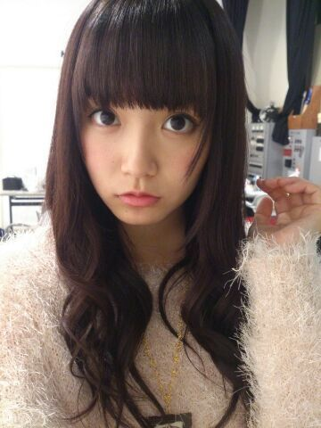

| 2014/02 18 Tue | ひめたん(*>ω<*)そ の409 |
ひめたんくまさん × まなつさんうささん

1年に一度のビッグイベント
Birthday Liveが近づいて参りました！
長丁場になりそうだから
体温調節できるような服装できてね◎
おにゃのこのみなさんヒールはつらいかもです
そいでしっかり寝て、しっかりごはん食べて
元気を持ってきてくださいな( ´ ▽ ` )
ねーそーいやさ
前回の質問返しコーナーの中で
ぐるぐるカーテン
やさしさなら間に合ってる
やさしさとは
が好きって言ったじゃーん？
でもねーひめたんね
やさしさとは も好きだけどね
音が出ないギター のがすきかも！笑
だからランキング訂正しといてー(´・ω・｀)
あっもちろん
ユニット曲として歌わせていただいてる
海流の島よ、コウモリよ、やさしさとは には
それぞれ思い出があって特別です＊＊
自分にとって
とってもかわいらしい存在。
なんか日記あげる頻度
ぐだぐだでごめんね(´・_・｀)
最近は撮影やらなんやらかんやらで
乃木坂充しておりますよー
あーなんか考えることがいっぱいで昇天しそう！
生写真「ニット」


 ひめたんは学校の校則とか
ひめたんは学校の校則とか
ちゃんと守る人ですか？
守る人よ( ^O^ )
何だかんだでまじめです
とゆーか破る勇気のないちきんちゃんです←
きゅんきゅん王国の国歌ってどんな感じですか？
多分ハードロックですよね(笑)
なんでよ！なんでそーなんのよ
ひめたんだってかあいい歌うたわせてよー(笑)
んえ？歌い声がかわいくないって？
そんなこというのはどのおくちかな(・∀・)
きゅんきゅん王国の王子様や執事は、
倍率が高そうなので、清掃員になりたいです。
時給はいくらですか？
ドリーミーでファンシーなきゅんきゅん王国で
お金の話はタブーってことに(´^ω^｀)笑
ここ最近で1番
大量に欲しいと思ったものは何ですか？
りんごジュースかな
猛烈にラッパ飲みしたいけど
飽きるんかなーどうなんかな。
中四国の並びが覚えらんないんだけど、
ひめたんは東北とか北関東は
どこが何県とかちゃんと言える？
ひめたん地理は強いんだよー！
言える自信はありますよヽ(・ｗ・)ノ
たぶんねたぶんねたぶ、んね
ひめたんのブログの
コメント欄下２ケタに46を踏んだ方へ
手書きでコメ返するコーナー
＼ ひめたん46 ／

いつもコメントたくさん
ありがとうございます！
そうそう、乃木どこのバレンタイン企画
ひめたんなら誰にあげるー？って質問が
非常に多かったからサクッとお答えしよーかなー
うーん......
誰だろう誰だろう。
いくちゃんはいつもお世話になってるし、
わかつきはあたしの旦那さんだし......
(＊´・ω・＊)
コメント(451)
2014/02/18 23:54